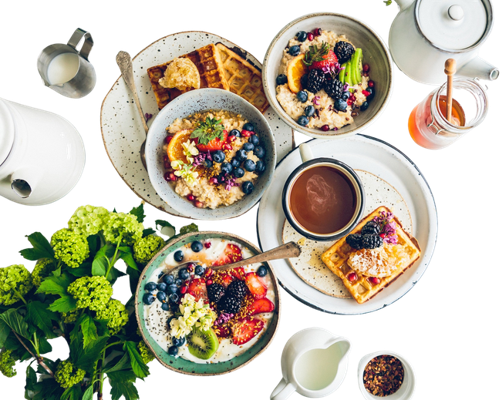
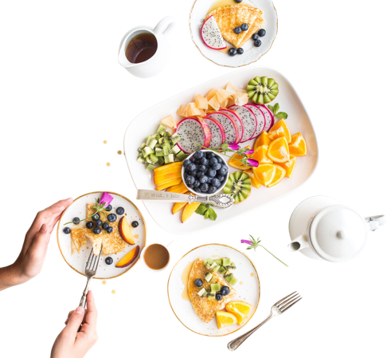

กินไหนดีคลองหก
เว็บช่วยหาร้านอาหารรอบ มทร.ธัญบุรี

ทำไมต้องมีเว็บนี้
นักศึกษาและคนในพื้นที่คลองหกมักเจอปัญหาเดิมทุกมื้อ คือไม่รู้จะกินอะไร รีวิวในแอปใหญ่ก็ไม่ตรงปก และร้านอร่อยในซอยเล็กๆ ไม่มีใครรู้จัก เว็บนี้จึงรวมร้านรอบมหาวิทยาลัยไว้ในที่เดียว พร้อมรูปจริง ราคา เวลาเปิด-ปิด และแผนที่นำทาง
แนวคิดของเรา
ค้นหาง่าย
พิมพ์ชื่อร้าน ชื่อเมนู หรือชื่อซอย แล้วเจอร้านที่ต้องการทันที
จัดเรียงอย่างเท่าเทียม
ไม่ใช้ดาวรีวิว ร้านแนะนำสุ่มใหม่ทุกครั้งที่เข้าเว็บ ทุกร้านได้ขึ้นหน้าแรกเท่ากัน
ข้อมูลครบในหน้าเดียว
ราคาเฉลี่ย เวลาเปิด-ปิด ที่อยู่ เบอร์โทร เมนู และปุ่มนำทางด้วย Google Maps
พื้นที่ให้บริการ
ฝั่งตะวันออกของคลองหก ต.คลองหก อ.คลองหลวง จ.ปทุมธานี เรียงจากเหนือลงใต้